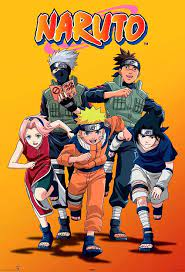
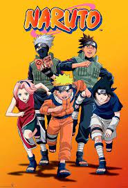

Popular Mangas
- Demon Slayer
- Naruto
- One piece
Demon Slayer is a manga and anime series created by Koyoharu Gotouge that follows the adventures of Tanjiro Kamado, a young boy who becomes a demon slayer after his family is killed and his sister Nezuko is turned into a demon by Muzan Kibutsuji, the first and most powerful demon
Naruto is a manga and anime series created by Masashi Kishimoto that follows the adventures of Naruto Uzumaki, a young ninja who dreams of becoming the Hokage, the leader of his village.
One Piece is a manga and anime series created by Eiichiro Oda that follows the adventures of Monkey D. Luffy, a young pirate who dreams of finding the legendary treasure called the One Piece and becoming the Pirate King.


Popular manhwa
- Tower of God
- Tales of Demons and Gods
- Omniscient reader
Tower of God is a popular Korean. It is a fantasy action story that follows the adventures of Twenty-Fifth Bam, a boy who enters a mysterious tower in search of his friend Rachel. Along the way, he meets various allies and enemies, and faces many challenges and mysteries.
Tales of Demons and Gods is a popular Chinese. It is a fantasy action story that follows the adventures of Nie Li, a young man who travels back in time to his past life as a powerful demon spiritist. He uses his knowledge and skills to change the fate of Glory City, the last bastion of humanity in a world plagued by monsters and demons.
The story follows Kim Dokja, a reader who has read every novel in the world and knows how they end. He finds himself in a world where the apocalypse has happened and he is the only one who can save humanity by using his knowledge. He becomes the Most Ancient Dream, a powerful being who can manipulate reality and create his own world